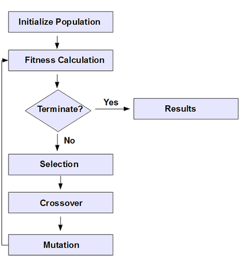
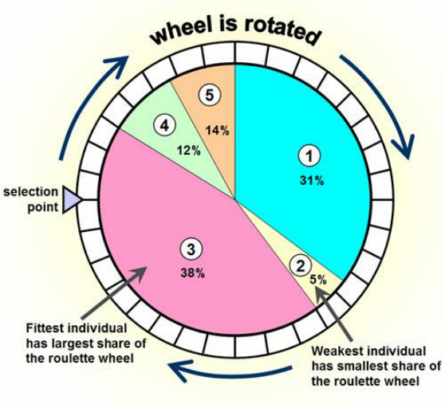
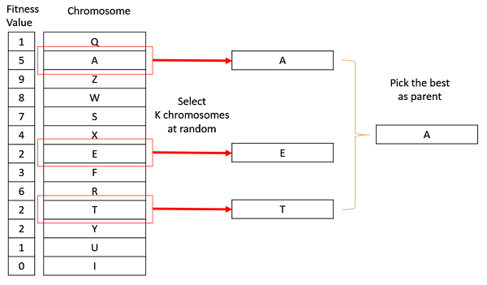
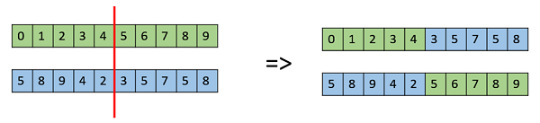
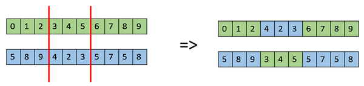
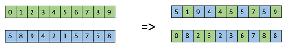
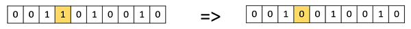
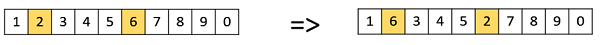
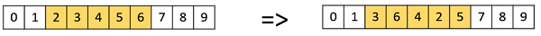
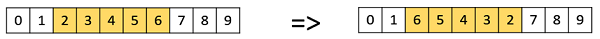

Genetic Algorithms¶
Genetic algorithm is basically a method that heavily inspired by the process of natural selection to find one of the best solution to a problem.
In nature, only the strong one survive, the process of eliminating the weak is called natural selection.
Genetic algorithm use that same principle to eliminate the “weak” solutions and finally produce the best solution.
It is clear that this process involves 5 main steps. The major step is selection, in this step, nature will select individuals that has strong gene from the initial population, after that they begin to step into the next stage which is crossing. After been through crossing step, they’ll produce childs, we call this step reproduction. a child then mutated to add some variation to the gene and finally moved back into the population.

What is fitness¶
The fitness function simply defined is a function which takes a candidate solution to the problem as input and produces as output how “fit” or how “good” the solution is with respect to the problem in consideration.
Selecting the good one¶
Selecting the appropriate entities is what the genetic algorithm selection stage all about. After calculating the fitness score, the next step is to use some mysterious methods to select a list of entities that can later be use to produce a better solution.
Although you can create your own way of selecting the fitting solutions, there are some famous methods that you can use:
-
Fitness proportionate selection (wheel selection) 
-
Tournament selection 
Performing crossover¶
Crossover is the stage where selected individuals are combined to form new individuals. Crossover is usually applied in a GA with a high probability - Pc. In crossover stage, you can also invent your own crossover techniques, however, there are also some techniques that you can use:
-
Single-point crossover 
-
Two-point crossover 
-
Uniform crossover 
Mutate the child¶
In simple terms, mutation may be defined as a small random tweak in the chromosome, to get a new solution. It is used to maintain and introduce diversity in the genetic population and is usually applied with a low probability - Pm. You can also invent your own mutation techniques, however, there are also some techniques that you can use:
-
Bit Flip Mutation 
-
Swap Mutation 
-
Scramble Mutation 
-
Inversion Mutation 
The end of the process¶
After mutating the child, it will be joining back with other mutated childs to reform a new population and the whole process start over. the process will stop if a certain solution’s fitness reached the desired fitness, we reach the max generation number or the population become stable.